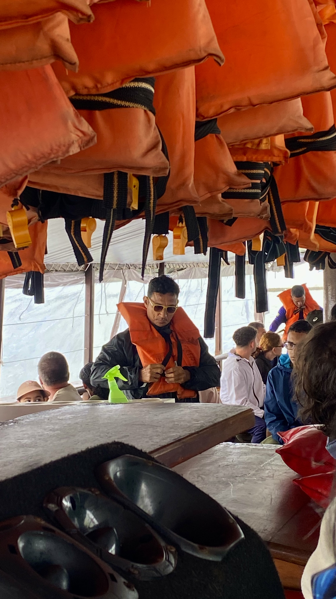
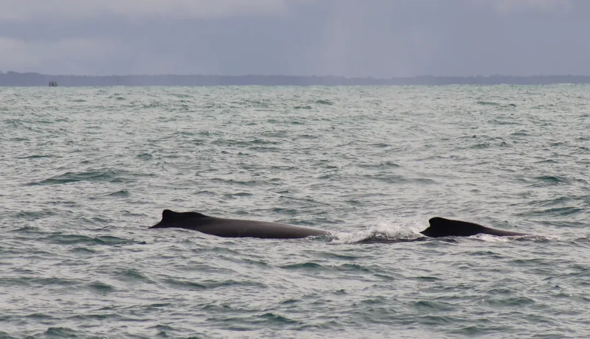
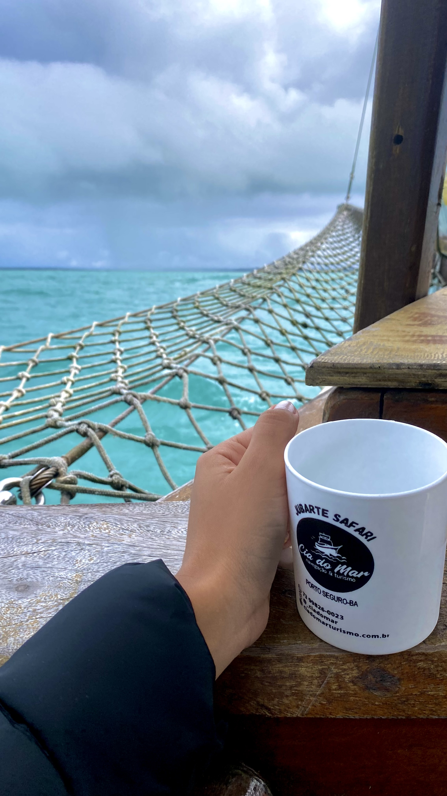
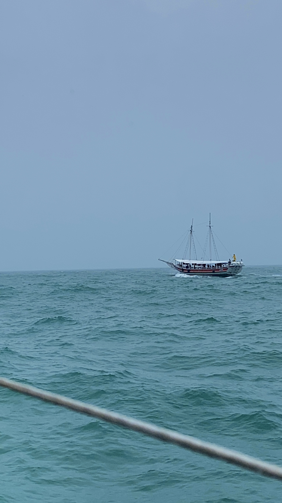
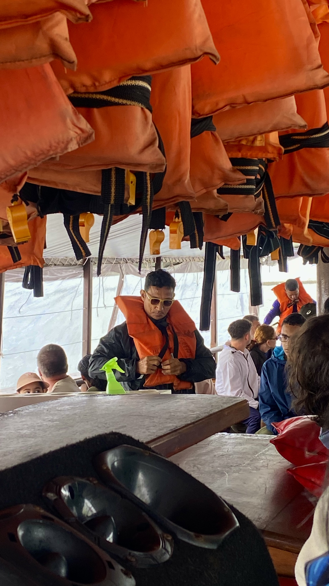
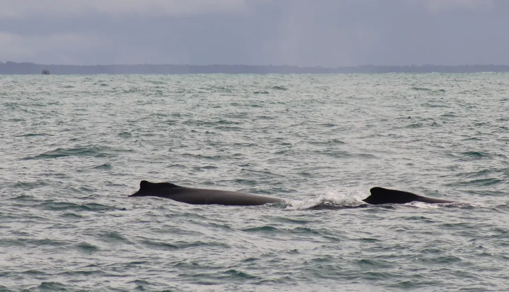
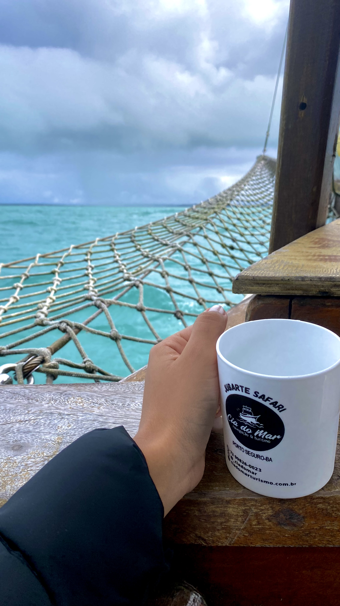
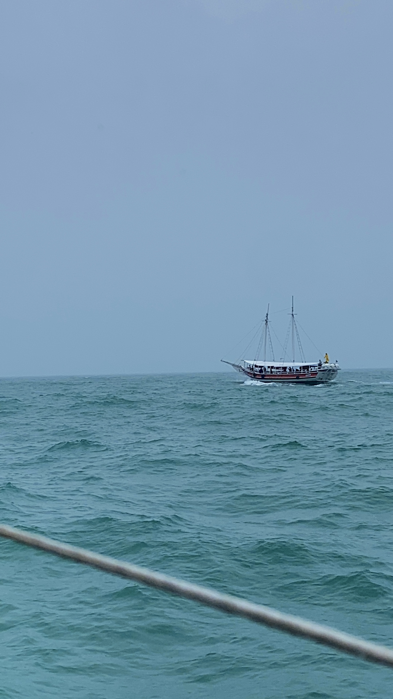

🐋 Sobre as Baleias-Jubarte
Durante a expedição, aprendi algo que me marcou muito: o ciclo de vida das baleias-jubarte é simplesmente fascinante.
Esses gigantes passam cerca de 4 a 5 meses se alimentando nas águas geladas da Antártida,(que inclusive é outro sonho meu conhecer esse lugar lindo), lá elas acumulando energia para a longa jornada que está por vir. Em seguida, levam aproximadamente 2 meses para migrar até as águas quentes do litoral da Bahia, especialmente em Arraial d’Ajuda, onde vêm para se acasalar.
Elas permanecem por aqui entre julho e novembro, e depois retornam à Antártida para se alimentar novamente. No ciclo seguinte, muitas voltam para as mesmas águas baianas, desta vez para dar à luz aos seus filhotes, que acompanham suas mães durante o primeiro ano de vida.
💔 Uma curiosidade triste que descobri (e eu realmente não sabia): quando ouvimos notícias sobre baleias com cerca de 8 metros encalhadas nas praias, quase sempre se trata de filhotes que se perderam da mãe. É de partir o coração, né?
Mas, ao mesmo tempo, é lindo saber que essas águas quentinhas do sul da Bahia são o berço de novas gerações de jubartes, e que temos a chance de testemunhar esse ciclo tão grandioso e delicado da natureza.
 22.09.20_04bd7dc3.jpg) 






